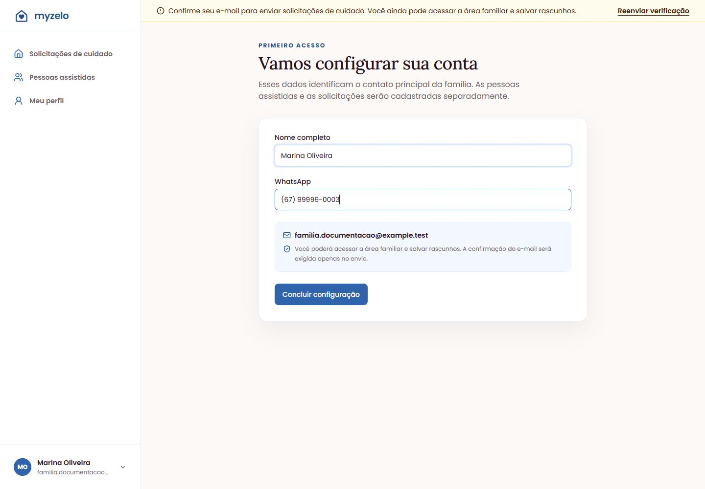
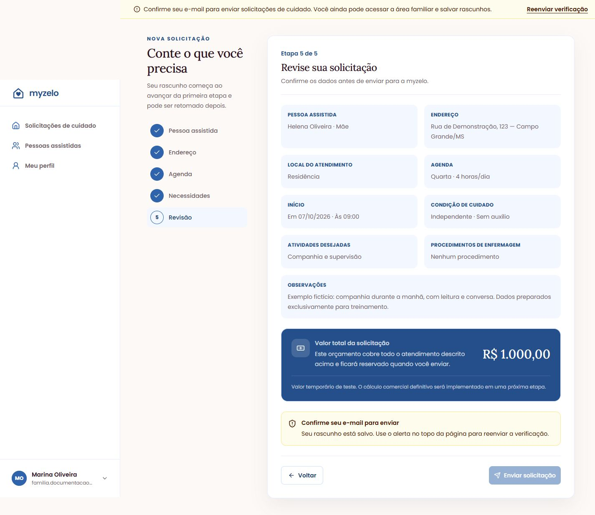

Começando
Confirmar e-mail e primeiro acesso
Configure o contato da família e libere o envio de solicitações.
Concluir a configuração
- Confira Nome completo do responsável.
- Preencha WhatsApp, incluindo DDD.
- Clique em Concluir configuração.
- Você será levado a Solicitações de cuidado, onde poderá começar seu primeiro pedido.


Se você concluiu um convite por e-mail
As instruções da próxima seção continuam valendo para o cadastro comum e para um novo endereço informado depois em Meu perfil. Confira o caminho de cadastro pelo convite antes de reenviar verificações desnecessárias.
Verificar o e-mail
- Abra a mensagem da myzelo com o assunto Confirme seu endereço de e-mail.
- Clique em Verificar e-mail na mensagem. Se for necessário, entre na mesma conta familiar.
- Volte à aplicação. A mensagem que exige confirmação deixa de aparecer e o envio da solicitação passa a ser permitido quando as etapas estiverem completas.
- Se a mensagem não chegou, confira spam e o endereço informado. Use Reenviar verificação no aviso do topo. Em Meu perfil, a ação equivalente é Reenviar e-mail.


Entender as pendências
A confirmação de e-mail e os dados fiscais têm momentos diferentes. Você pode salvar rascunhos sem confirmar o e-mail. Para enviar, precisa confirmar. Os dados fiscais são necessários quando for autorizar o pagamento de teste.
Resultado esperado
Seu contato está configurado e o e-mail confirmado permite enviar solicitações.
Regras que você precisa conhecer
- Sem confirmação de e-mail, a área familiar e os rascunhos continuam acessíveis.
- No convite por e-mail válido, a confirmação ocorre ao concluir o cadastro; no cadastro comum, use a mensagem de verificação.
- A confirmação não preenche seus dados fiscais automaticamente.
- Ao alterar o e-mail do perfil, será necessário confirmar o novo endereço.